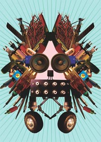

Top
Presenters
#000001
#000002
#000003
|
#000001
Date: 2005.05.12
Venue: SuperDeluxe
Presentations:
biopresence
Tocho Denki Daigaku (University of Electric Interception)
Onshitsu Kojo Iinkai (Sound Quality Improvement Committee)
Live Performances:
Oto Ga Band Mei
Masaki Fujihata
Atsuhiro Ito
DJ:
A.K.I. (KRUSH GROUP/A.K.I.PRODUCTIONS)
Cooperation: RADIO LIFE / SuperDeluxe
Coordinators: exonemo / Kanta Horio / Kazuhiro Jo
Support Staff: Hiroki Hayashi (flyer) / Kyo Fukuzawa / Ikumi Hirata / Yuko Mohri / Kazuyo Murakami
Press: RADIO LIFE / REALTOKYO
Photos
Dorkbot Tokyo landing!
The community "Dorkbot" of "people doing strange things with electricity" with whom 20 or more cities of the world are already infected landed also at this Tokyo at last on May 12(Thu), 2005. Super Deluxe of Roppongi to have been chosen as the venue of the starting event of "Dorkbot Tokyo". From before the start of an event, the hall is full of some doubtful miasma. It is such touch -- The ferocious intellect and the flexible sensitivity which are not the so-called art, or a design, furthermore the Akihabara, either are aiming at something that is going to start from now on with a vigilant eye, hiding a breath calmly.
 In such a wonderful atmosphere, the "Biopresence" of Shiho Fukuhara + George Tremmel which had visited Japan from London exactly for the "open nature exhibition" of ICC appears. Although it was expected as Electricity, the presentation of a biotechnology starts all at once. George wears the T-shirt written to be "people doing strange things with software"...
If it thinks, an informational century and a nuclear century also already finished, and it is infallible that the 21st century will turn into a century of biotechnology. Therefore, it was strange enough and had simple persuasive power that some things done for the presentation of the lecture style of a university, to arrange a test tube etc. in on a desk and conduct a manual DNA extraction experiment, and to build a cocktail from there. If it is a century of home blew DNA, more than home blew computing. From the start, it seems that the situation began to move in the direction interesting beyond anticipation. In such a wonderful atmosphere, the "Biopresence" of Shiho Fukuhara + George Tremmel which had visited Japan from London exactly for the "open nature exhibition" of ICC appears. Although it was expected as Electricity, the presentation of a biotechnology starts all at once. George wears the T-shirt written to be "people doing strange things with software"...
If it thinks, an informational century and a nuclear century also already finished, and it is infallible that the 21st century will turn into a century of biotechnology. Therefore, it was strange enough and had simple persuasive power that some things done for the presentation of the lecture style of a university, to arrange a test tube etc. in on a desk and conduct a manual DNA extraction experiment, and to build a cocktail from there. If it is a century of home blew DNA, more than home blew computing. From the start, it seems that the situation began to move in the direction interesting beyond anticipation.
  Next was a presentation by "Tocho Denki Daigaku/Onshitsu Kojo Iinkai". By the unit by two writers of "Radio Life", an insider magazine, the expected size of moderate (that is, somehow strange but) Dorkbot gains. It was jumped out that "nobody did although it must have been able to done when doing" more quantity than quality like a John Cage style Dorkbot, like booting PC with a 100,000 yen worth of batteries, or the audio system which used the human body as some cables. It is characteristic of a radio life. Next was a presentation by "Tocho Denki Daigaku/Onshitsu Kojo Iinkai". By the unit by two writers of "Radio Life", an insider magazine, the expected size of moderate (that is, somehow strange but) Dorkbot gains. It was jumped out that "nobody did although it must have been able to done when doing" more quantity than quality like a John Cage style Dorkbot, like booting PC with a 100,000 yen worth of batteries, or the audio system which used the human body as some cables. It is characteristic of a radio life.
  Here is the appearance of rumor "Oto ga Bando-mei" ("the sound is the band's name"). I already experienced their power and uniqueness in the weekly live-event that they were performing in the Koenji ENBAN. In this time, they present overwhelming impact of worthlessness by focusing on the Family Computer game performance (-- or it says -- Quiz Show) of their haymaker. The empty instant is really good that the moment two person's worthless rap is coming there and it suddenly breaks off. So, it is just art based on time... Here is the appearance of rumor "Oto ga Bando-mei" ("the sound is the band's name"). I already experienced their power and uniqueness in the weekly live-event that they were performing in the Koenji ENBAN. In this time, they present overwhelming impact of worthlessness by focusing on the Family Computer game performance (-- or it says -- Quiz Show) of their haymaker. The empty instant is really good that the moment two person's worthless rap is coming there and it suddenly breaks off. So, it is just art based on time...
However, it is truly humiliated at miasma like a black hole for involving in that whole venue.
 Masaki Fujihata "Solitaire" game starts after an interval for clearing up and preparation. Although Mr. Fujihata continues playing Solitaire alone for a long time and the projection of the situation is carried out and his Solitaire is really skillful! When I consider that strange deja vu is in such situations like public television or game parlor, Mr. Fujihata suddenly begin to do drawing of the process of "Solitaire" touch like the comics of Shigeru Sugiura. I admired that there was such performance, which is like a Zen, is environmental, is thought experimental, and is also conceptual. The performance gave me a feeling of an extended time and space that is the opposite to the scuttled one of "Oto ga Bando-mei". Masaki Fujihata "Solitaire" game starts after an interval for clearing up and preparation. Although Mr. Fujihata continues playing Solitaire alone for a long time and the projection of the situation is carried out and his Solitaire is really skillful! When I consider that strange deja vu is in such situations like public television or game parlor, Mr. Fujihata suddenly begin to do drawing of the process of "Solitaire" touch like the comics of Shigeru Sugiura. I admired that there was such performance, which is like a Zen, is environmental, is thought experimental, and is also conceptual. The performance gave me a feeling of an extended time and space that is the opposite to the scuttled one of "Oto ga Bando-mei".
 After the time11:00, the extended time having cut off as if it pillaged by the vacuum tube (Optron) explosion noise according of Atsuhiro Ito. It draws the air of a place by the concentration and destructive power. As ending of a Dorkbot starting, this sound was very effective... After the time11:00, the extended time having cut off as if it pillaged by the vacuum tube (Optron) explosion noise according of Atsuhiro Ito. It draws the air of a place by the concentration and destructive power. As ending of a Dorkbot starting, this sound was very effective...
To sum it up, on the hall, it was a loose and strange event, I think, it is said that seemingly it was "just dorkbot." If it is going to do tightly, the event itself will only become ordinary. I think that the open feeling on account of the looseness is important. Though it is cheap and AREGE and it will not become an open and nerd, if it thinks, it will be precious and difficult.

Returning also again at the end, regrettable one is I could not take the set photograph of the participant in on the day. When overlooking the venue round, not only a presenter but also each one who is doing strange things of the day was conspicuous. Ten years after, the key person who creates time will surely be born from them. I privately consider that it can be take a set photograph like at the time of "9 Evenings of Theatre and Engineering" of EAT. Let's take it next time! Anyway, it was really tired with labor, Kanta Horio, Kazuhiro Jo (S.W.O.), exonemo, and everyone who planned and performed this precious event, thank you for everything. The batch of a vacuum tube and a transistor that purchased on the day are also used regularly :-)
Text by Akihiro Kubota
Translation by Kazuhiro Jo
Photos
| |